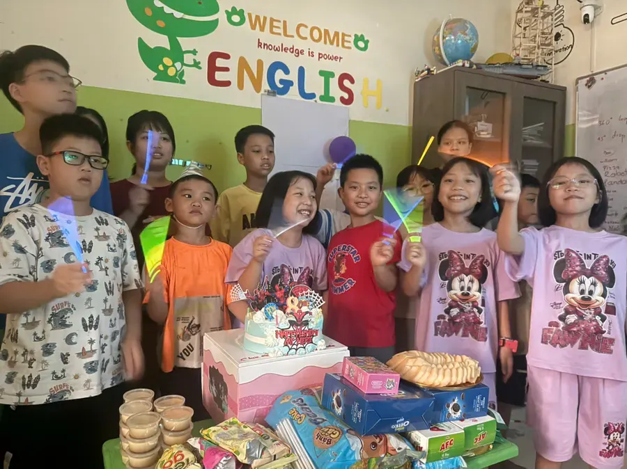

Who is Neptune for?
Neptune is the third level of HEC's ELA pathway. Children move from “reading to decode” to “reading to understand and prove”: reading informational texts of about 250 words, inferring from what they read, using the past tense to tell stories and writing 6–8 sentence paragraphs with an opening and a closing sentence.
- Children who have completed Venus, or placed at that level in the placement test.
- Children who read short passages but aren't used to answering who/what/why with evidence from the text.
- Children who tell stories in simple sentences but make past-tense errors and don't connect their sentences.
- Children who want to give a confident 2-minute talk with visuals.
How is an ELA class different from a regular English class?
Neptune has children do what ELA students in the US do every week: close reading with text-evidence questions, sentence combining for fluency, structured academic talk (think – pair – share), then writing a paragraph with a topic sentence and a closing sentence. The end-of-course product is a reading–writing task marked with a rubric, plus a 2-minute talk with visuals.
Why does this work better? See the seven research findings in What is ELA? ELA vs ESL.
Content, goals and method
Big ideas
- Communities & Celebrations
- Exploration & Discovery
- Helping & Responsibility
Essential questions
- How do communities work together?
- What do explorers teach us?
- How can I make a difference?
Intended outcomes
- Past simple, going to, comparatives
- Read ~250‑word texts; inferencing
- 2‑minute talk with visuals
- 6–8 sentence paragraph
Success criteria
- Past‑time verbs ≤3 errors/100 words
- Answer who/what/why with evidence
- Cohesive paragraph with topic & closing
Educational journey
- Entry: grammar snapshot + inference probe sets targets.
- Weeks 1–2: narrative past; evidence sentences; mini‑talks.
- Weeks 3–4: informational texts; comparative reports.
- Weeks 5–6: community helper project; edit for cohesion.
- Weeks 7–8: reading‑writing performance task with rubric feedback.
- Next: Discover 1 (Jupiter) for inquiry projects.
How we teach
- Close reading with text‑evidence prompts
- Sentence combining for fluency
- Structured academic talk (TPS → share)
- Spiral review quizzes
INTASC connections (course‑specific)
- Std 4 – Content Knowledge: Past simple, going to, comparatives and cohesion taught in authentic texts.
- Std 5 – Application of Content: Mini‑projects use interview/observation to apply language for real purposes.
- Std 6 – Assessment: Reading‑for‑evidence and short‑write rubrics tracked over units.
- Std 7 – Planning: Backward design: text‑dependent questions → writing task → micro‑presentation.
- Std 8 – Instructional Strategies: Mentor‑paragraph analysis, guided notes, and rehearsed micro‑talks.
- Std 2 – Learner Differences: Choice of product (poster, audio, slide) for summative tasks.
Who teaches your child?
The program is led by a teacher with a New Jersey (USA) teaching certificate, who teaches to the US InTASC professional standards for teachers — the specific criteria are listed in each section of this page.
HEC has trained foreign and Vietnamese teaching assistants with degrees in English or education, who support small-group discussion, marking and demanding tasks. Research from the Education Endowment Foundation (UK) found that oral language work led by trained teaching assistants is about as effective as teacher-led work.
The ELA pathway at HEC
Every class is a step on the ELA pathway from kindergarten to IELTS; HEC places children by level, not just by age.
- Mars · Kindergarten · National Geographic Look Starter
- Venus · National Geographic Look 1
- Neptune · National Geographic Look 2 · you are here
- Jupiter · Advanced ELA, Grades 3–4 · Reach Higher
- SKY 1 · Advanced ELA, Grades 5–6 · Oxford Discover
- Sanrio Grade 6 · Academic writing & grammar
- Sun · IELTS
There is also Mercury, Cambridge Math taught in English — learning language through content.
Standards and credentials
- Common Core ELA standards (USA)
- Cambridge English levels
- CEFR framework (matching the Cambridge levels)
- New Jersey–certified teacher
- Licensed by the Hanoi Department of Education and Training
FAQ
Who is the Neptune class for?
Children who have completed Venus or placed at that level: they read short passages, and are ready for ~250-word informational texts, the past tense and 6–8 sentence paragraphs. HEC places children by level with a free placement test.
What will my child achieve after one Neptune course?
Use past-tense verbs with no more than 3 errors per 100 words; answer who/what/why questions with evidence from the text; write a cohesive paragraph with an opening and a closing sentence; give a 2-minute talk with visuals.
How is Neptune different from a regular English conversation class?
Children read real texts, answer with evidence, write paragraphs and present — the ELA approach — rather than only practicing set phrases. With no more than 12 students, the teacher corrects each child's writing and pronunciation.
Which class comes after Neptune?
After the placement test, the teacher recommends the right class: Jupiter (advanced ELA, Grades 3–4) if your child is far ahead, or continuing along the ELA pathway at your child's level.
What are Neptune's schedule and fees?
Wednesdays and Fridays, 17:30–19:00. The fee is 210,000 VND per 90-minute session, about 1,680,000–1,890,000 VND a month, billed only for sessions held, with a 5% sibling discount and currently no book fee.